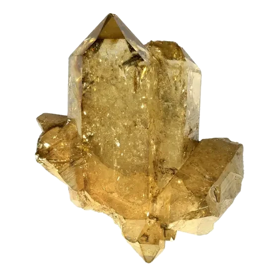

Mineral Grimoire
 Champagne Aura Quartz
Champagne Aura Quartz
Appearance
Yellow, brown. Translucent clear crystal with yellowish-brown metallic coating. Fairly easily obtained.
Origin
Alchemicalized natural Smoky Quartz from Brazil and United States, Madagascar, India, Australia, Arkansas
Attributes
Champagne Aura Quartz is a high vibration stone of transmutation alchemicalized with gold and indium coating over natural Smoky Quartz.
Champagne Aura Quartz helps you to ground energetic and psychological changes into your body and to put your spiritual ideals into practice. It opens your third eye, grounds you in your subtle bodies, and protects during multi-dimensional journeying and other metaphysical work. Gold amplifies, regenerates and attracts so the combination enhances the basic properties of the underlying Quartz and this is a useful stone for those just beginning high vibration crystal work.
Purifying Smoky Quartz forms the base so this is excellent for drawing off and transmuting negative energy into positive. It carries dark, luminous light that encourages hidden parts of the self to emerge, and carries the energy of Lucifer, the much maligned archangel who came to earth to bring light into dark places and who goes where others fear to tread. Working with this crystal helps you to understand and embrace shadow parts of yourself and to accept without judgement alienated outsiders and scapegoats for society, the 'sin eaters' who absorb negativity and are the focus for the projections of others. The importance of their work is rarely recognized.
Champagne Aura Quartz guards against negative energies of all kinds, including electromagnetic stress, and assists with earth healing and transmutation. Helpful where dis-ease is caused by emotional or physical toxicity, it assists in reconciling different viewpoints in yourself or others and settles conflict. It assists in all situations where negotiation is required and encourages philanthropy and charity.
Indium assists the organs of the body to find balance (especially the thyroid) and increases assimilation of minerals, supporting optimum metabolic function and hormonal balance. It is reported to be anti-carcinogenic.
Healing
Champagne Aura Quartz may assist the thyroid and endocrine system and clear the pituitary and pineal glands where there has been depletion or blockage caused by environmental toxins and excess fluoridation. It relieves headaches, especially sinus or psychically based, and releases pain or tension in muscles and joints.
Position
Place, grid or position as appropriate especially over the third eye and soma chakras. Place over the site of toxicity and cleanse after use. Disperse gem essence around the aura
Additional Notes
Alchemicalized natural Smoky Quartz with gold and indium coating, high vibration transmutation stone that protects during metaphysical work